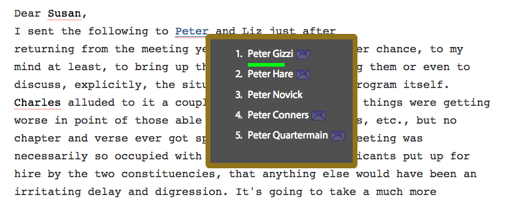
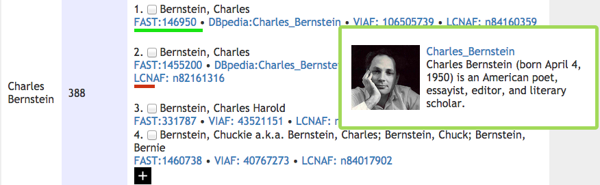

Vihari Piratla
Home / About / CV / Projects / Publications / OtherLinks / Blog
ePADD is a digital archival and collection tool.
Similar to most of the tools that deal with unstructured content, Information Extraction tasks such as Entity Recognition and Linking are crucial for the software.
Supervised techniques for Named Entity Recognition (NER) suffer the domain adaptability problem.
The problem of domain adaptability is acute in ePADD, since every archive is from a different domain.
For more than a year now, I have researched on various solutions that can avoid this problem and can also preferably relax the other constraints of state-of-art NER techniques such as numerous coarse types (PERSON, LOCATION, ORGANISATION) and scalability across languages.
We have adopted an approach similar to a rule-based system with the difference that the rules are automatically inferred during training.
Also, the rules are patterns on the entities and do not look at the surrounding context of the entity. The system behaves like a human by inferring rules like a place followed by "times" is a newspaper, any token followed by "malfunction" is most likely a disease.
Thousands of such rules for each of the fine-grained type are inferred from the gazette lists during training.
Since the rules are patterns on the entities, the recall is low as the single word entities and other variants of entities are missed.
For this reason, we link all the proper nouns found in the corpus to each other and propagate the type to all the entities in a cluster. The above-described system is implemented and being tested out by the users.
This work will be submitted to KDD'16.
I have also implemented other NLP-related tasks in ePADD such as internal and external authority linking. The left image below shows a snapshot of internal authority linking, where an ambiguous name: Peter is expanded to an unambiguous name: Peter Gizzi; The right image shows the entity linking to external authority.
|  |  |